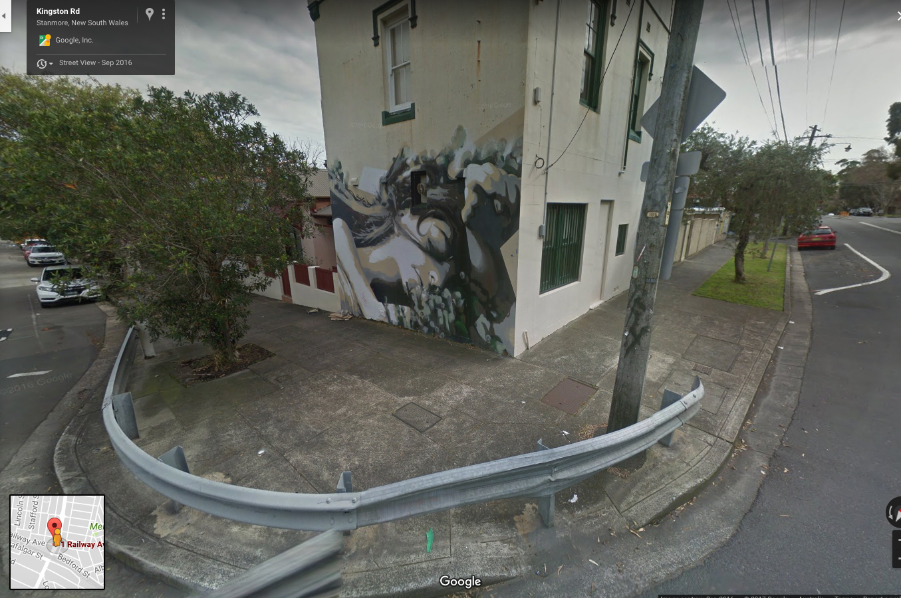
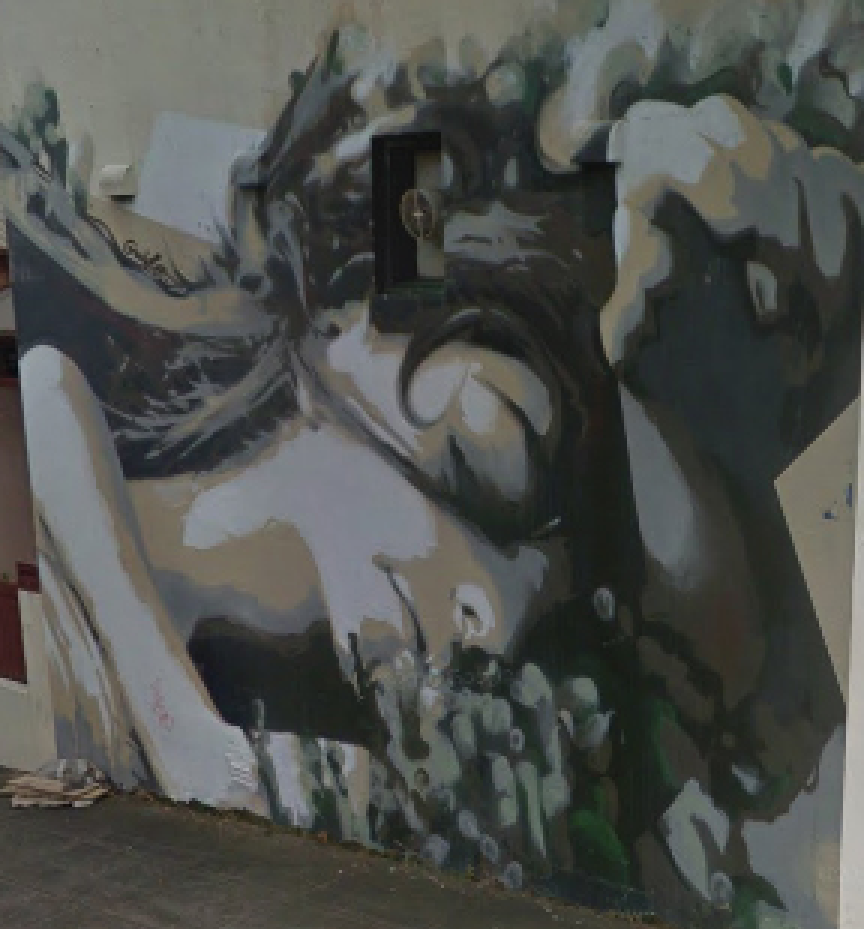

Jonathan McKeown
Sydney NSW, Australia
The Street View Gallery
… And all things were her sleep.
– Rilke I don’t know how many times I drove past before I saw what it was. I mean I saw it, of
course – and liked it too somehow. It drew me with its shades of beige and grey, its white
and black – its subtle hints of green – its details, lines, and use of clean space that blends so
seamlessly back again into the bland beige wall – the other side of which someone may well
be making coffee, watching TV, or sleeping. But for ages I couldn’t quite make it out. The
bottlebrush growing in front didn’t help – or helped, I should say, by being in the way:
piquing my curiosity. Nor did the fact that it’s right on the corner of a busy roundabout –
near the railway line at the end of Liberty street. Trying to keep an eye on the road and all
the traffic you’d be lucky to snatch one oblique glimpse – when you exit onto Kingston. And
besides the challenging placement of the exhibit the artist’s perspective is also … I don’t
know … unconventional – unexpected. Even when I showed my wife on Google Maps it
took her a while … I’m not sure if it has a given title: I would call it, maybe, Sweet Dreams
(there’s the hint of a smile) … or Sleeping Beauty … even better …
briar rose
waking up from the dream
within a dream
Notes:
Epigraph from Sonnets to Orpheus, I, 2.
Google Maps image of Liberty Street. If you look closely, you'll be able to see her.

 |